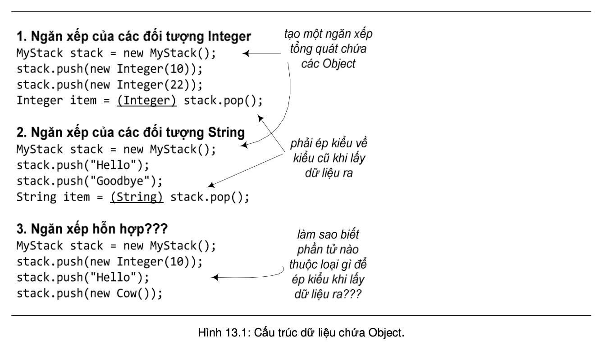
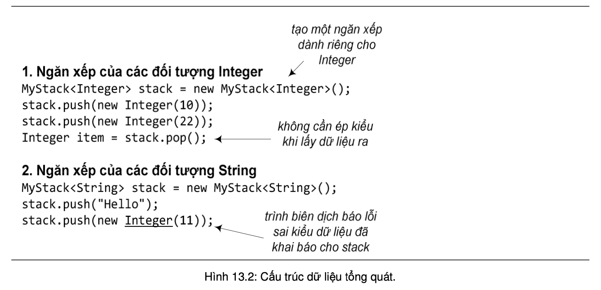

Ta thử hình dung một phương thức sort sắp xếp một loạt các giá trị kiểu int, một phương thức sort khác dành cho các đối tượng String, một phương thức sort dành cho các đối tượng kiểu Complex (số phức). Mã cài đặt các phương thức đó hầu như là giống hệt nhau, chỉ khác ở kiểu dữ liệu tại các dòng khai báo biến. Hình dung một lớp IntegerStack (ngăn xếp) để lưu trữ các đối tượng Integer, một lớp AnimalStack để lưu trữ các đối tượng Animal, một lớp StringStack để lưu trữ các đối tượng String, v.v.. Mã cài đặt các lớp này cũng hầu như là giống hệt nhau. Nếu như ta có thể viết duy nhất một phương thức sort dùng được cho cả int, String, Complex, một lớp Stack dùng để tạo được cả ngăn xếp Integer, ngăn xếp Animal, ngăn xếp String, thì đó là lập trình tổng quát. Lập trình tổng quát cho phép xây dựng các phương thức tổng quát và các lớp tổng quát, mà nhờ đó có được một tập các phương thức tương tự nhau từ chỉ một cài đặt phương thức, một tập các kiểu dữ liệu tương tự nhau từ chỉ một cài đặt lớp.
Trước phiên bản 5.0 của Java API, ta có thể dùng quan hệ thừa kế và lớp Object để có các cấu trúc dữ liệu tổng quát. Chẳng hạn, ta tạo một lớp MyStack là ngăn xếp dành cho kiểu Object:
Do Object là lớp tổ tiên của tất cả các lớp khác, nên ta có thể dùng đối tượng MyStack đó để làm ngăn xếp cho các đối tượng kiểu Integer, hay cho các đối tượng String (xem Hình 13.1). Tuy nhiên, nhược điểm của cách làm này là khi lấy dữ liệu ra khỏi cấu trúc, ta cần phải ép kiểu trở lại kiểu ban đầu, do các phương thức của MyStack chỉ biết làm việc với tham chiếu kiểu Object. Ngoài ra, cũng vì MyStack đó coi tất cả các phần tử như là các Object, nên trình biên dịch không kiểm tra kiểu để đảm bảo một đối tượng MyStack chỉ chứa các đối tượng thuộc cùng một loại, chỉ toàn Integer hoặc chỉ toàn String. Các đối tượng Integer, hay String, hay thậm chí Cow thì cũng đều là Object cả. Các đối tượng ngăn xếp có tiềm năng trở thành hỗn độn và sẽ dễ sinh lỗi trong quá trình chạy. Đó không phải là sự linh hoạt mà ta mong muốn.
Kể từ phiên bản 5.0, Java hỗ trợ một cơ chế khác của lập trình tổng quát, khắc phục được hai nhược điểm trên. Ví dụ như trong Hình 13.2. Từ đây, ta có thể tạo các collection có tính an toàn kiểu cao hơn, các vấn đề về kiểu được phát hiện khi biên dịch thay vì tại thời gian chạy. Chương này nói về cơ chế lập trình tổng quát đó.